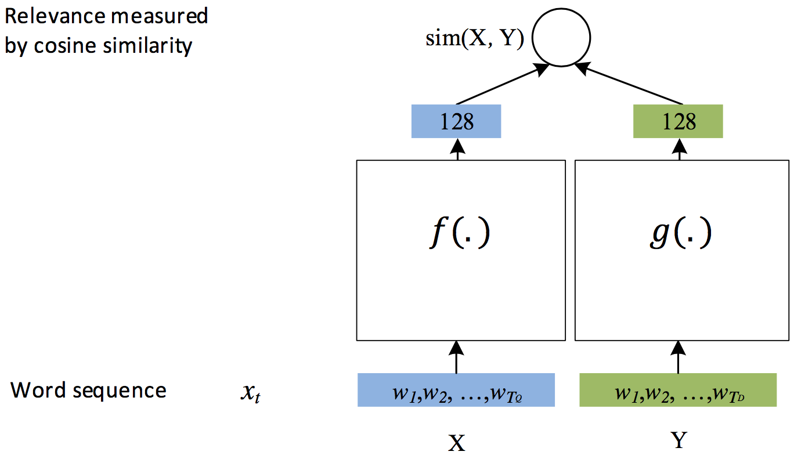
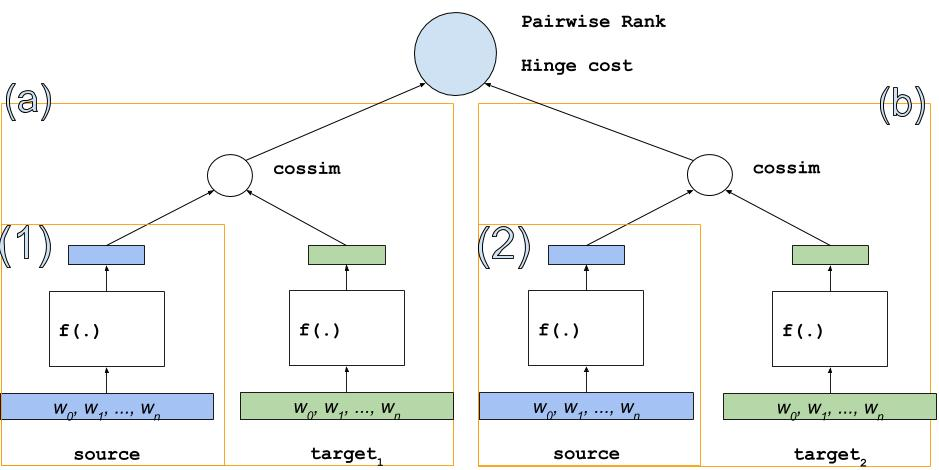

深度结构化语义模型 (Deep Structured Semantic Models, DSSM)
深度结构化语义模型 (Deep Structured Semantic Models, DSSM)
DSSM使用DNN模型在一个连续的语义空间中学习文本低纬的表示向量，并且建模两个句子间的语义相似度。 本例演示如何使用 PaddlePaddle实现一个通用的DSSM 模型，用于建模两个字符串间的语义相似度， 模型实现支持通用的数据格式，用户替换数据便可以在真实场景中使用该模型。
背景介绍
DSSM [1]是微软研究院13年提出来的经典的语义模型，用于学习两个文本之间的语义距离， 广义上模型也可以推广和适用如下场景：
- CTR预估模型，衡量用户搜索词（Query）与候选网页集合（Documents）之间的相关联程度。
- 文本相关性，衡量两个字符串间的语义相关程度。
- 自动推荐，衡量User与被推荐的Item之间的关联程度。
DSSM 已经发展成了一个框架，可以很自然地建模两个记录之间的距离关系， 例如对于文本相关性问题，可以用余弦相似度 (cosin similarity) 来刻画语义距离； 而对于搜索引擎的结果排序，可以在DSSM上接上Rank损失训练处一个排序模型。
模型简介
在原论文[1]中，DSSM模型用来衡量用户搜索词 Query 和文档集合 Documents 之间隐含的语义关系，模型结构如下

图 1. DSSM 原始结构
其贯彻的思想是， 用DNN将高维特征向量转化为低纬空间的连续向量（图中红色框部分） ， 在上层用cosin similarity来衡量用户搜索词与候选文档间的语义相关性 。
在最顶层损失函数的设计上，原始模型使用类似Word2Vec中负例采样的方法， 一个Query会抽取正例 $D+$ 和4个负例 $D-$ 整体上算条件概率用对数似然函数作为损失， 这也就是图 1中类似 $P(D_1|Q)$ 的结构，具体细节请参考原论文。
随着后续优化DSSM模型的结构得以简化[3]，演变为：

图 2. DSSM通用结构
图中的空白方框可以用任何模型替代，比如全连接FC，卷积CNN，RNN等都可以， 该模型结构专门用于衡量两个元素（比如字符串）间的语义距离。
在现实使用中，DSSM模型会作为基础的积木，搭配上不同的损失函数来实现具体的功能，比如
- 在排序学习中，将 图 2 中结构添加 pairwise rank损失，变成一个排序模型
- 在CTR预估中，对点击与否做0，1二元分类，添加交叉熵损失变成一个分类模型
- 在需要对一个子串打分时，可以使用余弦相似度来计算相似度，变成一个回归模型
本例将尝试面向应用提供一个比较通用的解决方案，在模型任务类型上支持
- 分类
- [-1, 1] 值域内的回归
- Pairwise-Rank
在生成低纬语义向量的模型结构上，本模型支持以下三种：
- FC, 多层全连接层
- CNN，卷积神经网络
- RNN，递归神经网络
模型实现
DSSM模型可以拆成三小块实现，分别是左边和右边的DNN，以及顶层的损失函数。 在复杂任务中，左右两边DNN的结构可以是不同的，比如在原始论文中左右分别学习Query和Document的semantic vector， 两者数据的数据不同，建议对应定制DNN的结构。
本例中为了简便和通用，将左右两个DNN的结构都设为相同的，因此只有三个选项FC,CNN,RNN等。
在损失函数的设计方面，也支持三种，分类, 回归, 排序； 其中，在回归和排序两种损失中，左右两边的匹配程度通过余弦相似度（cossim）来计算； 在分类任务中，类别预测的分布通过softmax计算。
在其它教程中，对上述很多内容都有过详细的介绍，例如：
- 如何CNN, FC 做文本信息提取可以参考 text classification
- RNN/GRU 的内容可以参考 Machine Translation
- Pairwise Rank即排序学习可参考 learn to rank
相关原理在此不再赘述，本文接下来的篇幅主要集中介绍使用PaddlePaddle实现这些结构上。
如图3，回归和分类模型的结构很相似

图 3. DSSM for REGRESSION or CLASSIFICATION
最重要的组成部分包括词向量，图中(1),(2)两个低纬向量的学习器（可以用RNN/CNN/FC中的任意一种实现），
最上层对应的损失函数。
而Pairwise Rank的结构会复杂一些，类似两个 图 4. 中的结构，增加了对应的损失函数：
- 模型总体思想是，用同一个source(源)为左右两个target(目标)分别打分——
(a),(b)，学习目标是(a),(b)间的大小关系 (a)和(b)类似图3中结构，用于给source和target的pair打分(1)和(2)的结构其实是共用的，都表示同一个source，图中为了表达效果展开成两个

图 4. DSSM for Pairwise Rank
下面是各个部分具体的实现方法，所有的代码均包含在 ./network_conf.py 中。
创建文本的词向量表
def create_embedding(self, input, prefix=''):
'''
Create an embedding table whose name has a `prefix`.
'''
logger.info("create embedding table [%s] which dimention is %d" %
(prefix, self.dnn_dims[0]))
emb = paddle.layer.embedding(
input=input,
size=self.dnn_dims[0],
param_attr=ParamAttr(name='%s_emb.w' % prefix))
return emb
由于输入给词向量表(embedding table)的是一个句子对应的词的ID的列表 ，因此词向量表输出的是词向量的序列。
CNN 结构实现
def create_cnn(self, emb, prefix=''):
'''
A multi-layer CNN.
@emb: paddle.layer
output of the embedding layer
@prefix: str
prefix of layers' names, used to share parameters between more than one `cnn` parts.
'''
def create_conv(context_len, hidden_size, prefix):
key = "%s_%d_%d" % (prefix, context_len, hidden_size)
conv = paddle.networks.sequence_conv_pool(
input=emb,
context_len=context_len,
hidden_size=hidden_size,
# set parameter attr for parameter sharing
context_proj_param_attr=ParamAttr(name=key + 'contex_proj.w'),
fc_param_attr=ParamAttr(name=key + '_fc.w'),
fc_bias_attr=ParamAttr(name=key + '_fc.b'),
pool_bias_attr=ParamAttr(name=key + '_pool.b'))
return conv
logger.info('create a sequence_conv_pool which context width is 3')
conv_3 = create_conv(3, self.dnn_dims[1], "cnn")
logger.info('create a sequence_conv_pool which context width is 4')
conv_4 = create_conv(4, self.dnn_dims[1], "cnn")
return conv_3, conv_4
CNN 接受 embedding table输出的词向量序列，通过卷积和池化操作捕捉到原始句子的关键信息， 最终输出一个语义向量（可以认为是句子向量）。
本例的实现中，分别使用了窗口长度为3和4的CNN学到的句子向量按元素求和得到最终的句子向量。
RNN 结构实现
RNN很适合学习变长序列的信息，使用RNN来学习句子的信息几乎是自然语言处理任务的标配。
def create_rnn(self, emb, prefix=''):
'''
A GRU sentence vector learner.
'''
gru = paddle.layer.gru_memory(input=emb,)
sent_vec = paddle.layer.last_seq(gru)
return sent_vec
FC 结构实现
def create_fc(self, emb, prefix=''):
'''
A multi-layer fully connected neural networks.
@emb: paddle.layer
output of the embedding layer
@prefix: str
prefix of layers' names, used to share parameters between more than one `fc` parts.
'''
_input_layer = paddle.layer.pooling(
input=emb, pooling_type=paddle.pooling.Max())
fc = paddle.layer.fc(input=_input_layer, size=self.dnn_dims[1])
return fc
在构建FC时需要首先使用paddle.layer.pooling 对词向量序列进行最大池化操作，将边长序列转化为一个固定维度向量，
作为整个句子的语义表达，使用最大池化能够降低句子长度对句向量表达的影响。
多层DNN实现
在 CNN/DNN/FC提取出 semantic vector后，在上层可继续接多层FC来实现深层DNN结构。
def create_dnn(self, sent_vec, prefix):
# if more than three layers exists, a fc layer will be added.
if len(self.dnn_dims) > 1:
_input_layer = sent_vec
for id, dim in enumerate(self.dnn_dims[1:]):
name = "%s_fc_%d_%d" % (prefix, id, dim)
logger.info("create fc layer [%s] which dimention is %d" %
(name, dim))
fc = paddle.layer.fc(
input=_input_layer,
size=dim,
name=name,
act=paddle.activation.Tanh(),
param_attr=ParamAttr(name='%s.w' % name),
bias_attr=ParamAttr(name='%s.b' % name),
)
_input_layer = fc
return _input_layer
分类或回归实现
分类和回归的结构比较相似，因此可以用一个函数创建出来
def _build_classification_or_regression_model(self, is_classification):
'''
Build a classification/regression model, and the cost is returned.
A Classification has 3 inputs:
- source sentence
- target sentence
- classification label
'''
# prepare inputs.
assert self.class_num
source = paddle.layer.data(
name='source_input',
type=paddle.data_type.integer_value_sequence(self.vocab_sizes[0]))
target = paddle.layer.data(
name='target_input',
type=paddle.data_type.integer_value_sequence(self.vocab_sizes[1]))
label = paddle.layer.data(
name='label_input',
type=paddle.data_type.integer_value(self.class_num)
if is_classification else paddle.data_type.dense_input)
prefixs = '_ _'.split(
) if self.share_semantic_generator else 'left right'.split()
embed_prefixs = '_ _'.split(
) if self.share_embed else 'left right'.split()
word_vecs = []
for id, input in enumerate([source, target]):
x = self.create_embedding(input, prefix=embed_prefixs[id])
word_vecs.append(x)
semantics = []
for id, input in enumerate(word_vecs):
x = self.model_arch_creater(input, prefix=prefixs[id])
semantics.append(x)
concated_vector = paddle.layer.concat(semantics)
prediction = paddle.layer.fc(
input=concated_vector,
size=self.class_num,
act=paddle.activation.Softmax())
cost = paddle.layer.classification_cost(
input=prediction,
label=label) if is_classification else paddle.layer.mse_cost(
prediction, label)
return cost, prediction, label
Pairwise Rank实现
Pairwise Rank复用上面的DNN结构，同一个source对两个target求相似度打分， 如果左边的target打分高，预测为1，否则预测为 0。
def _build_rank_model(self):
'''
Build a pairwise rank model, and the cost is returned.
A pairwise rank model has 3 inputs:
- source sentence
- left_target sentence
- right_target sentence
- label, 1 if left_target should be sorted in front of right_target, otherwise 0.
'''
source = paddle.layer.data(
name='source_input',
type=paddle.data_type.integer_value_sequence(self.vocab_sizes[0]))
left_target = paddle.layer.data(
name='left_target_input',
type=paddle.data_type.integer_value_sequence(self.vocab_sizes[1]))
right_target = paddle.layer.data(
name='right_target_input',
type=paddle.data_type.integer_value_sequence(self.vocab_sizes[1]))
label = paddle.layer.data(
name='label_input', type=paddle.data_type.integer_value(1))
prefixs = '_ _ _'.split(
) if self.share_semantic_generator else 'source left right'.split()
embed_prefixs = '_ _'.split(
) if self.share_embed else 'source target target'.split()
word_vecs = []
for id, input in enumerate([source, left_target, right_target]):
x = self.create_embedding(input, prefix=embed_prefixs[id])
word_vecs.append(x)
semantics = []
for id, input in enumerate(word_vecs):
x = self.model_arch_creater(input, prefix=prefixs[id])
semantics.append(x)
# cossim score of source and left_target
left_score = paddle.layer.cos_sim(semantics[0], semantics[1])
# cossim score of source and right target
right_score = paddle.layer.cos_sim(semantics[0], semantics[2])
# rank cost
cost = paddle.layer.rank_cost(left_score, right_score, label=label)
# prediction = left_score - right_score
# but this operator is not supported currently.
# so AUC will not used.
return cost, None, None
数据格式
在 ./data 中有简单的示例数据
回归的数据格式
# 3 fields each line:
# - source's word ids
# - target's word ids
# - target
<ids> \t <ids> \t <float>
比如：
3 6 10 \t 6 8 33 \t 0.7
6 0 \t 6 9 330 \t 0.03
分类的数据格式
# 3 fields each line:
# - source's word ids
# - target's word ids
# - target
<ids> \t <ids> \t <label>
比如：
3 6 10 \t 6 8 33 \t 0
6 10 \t 8 3 1 \t 1
排序的数据格式
# 4 fields each line:
# - source's word ids
# - target1's word ids
# - target2's word ids
# - label
<ids> \t <ids> \t <ids> \t <label>
比如：
7 2 4 \t 2 10 12 \t 9 2 7 10 23 \t 0
7 2 4 \t 10 12 \t 9 2 21 23 \t 1
执行训练
可以直接执行 python train.py -y 0 --model_arch 0 使用 ./data/classification 目录里简单的数据来训练一个分类的FC模型。
其他模型结构也可以通过命令行实现定制，详细命令行参数如下
usage: train.py [-h] [-i TRAIN_DATA_PATH] [-t TEST_DATA_PATH]
[-s SOURCE_DIC_PATH] [--target_dic_path TARGET_DIC_PATH]
[-b BATCH_SIZE] [-p NUM_PASSES] -y MODEL_TYPE --model_arch
MODEL_ARCH
[--share_network_between_source_target SHARE_NETWORK_BETWEEN_SOURCE_TARGET]
[--share_embed SHARE_EMBED] [--dnn_dims DNN_DIMS]
[--num_workers NUM_WORKERS] [--use_gpu USE_GPU] [-c CLASS_NUM]
PaddlePaddle DSSM example
optional arguments:
-h, --help show this help message and exit
-i TRAIN_DATA_PATH, --train_data_path TRAIN_DATA_PATH
path of training dataset
-t TEST_DATA_PATH, --test_data_path TEST_DATA_PATH
path of testing dataset
-s SOURCE_DIC_PATH, --source_dic_path SOURCE_DIC_PATH
path of the source's word dic
--target_dic_path TARGET_DIC_PATH
path of the target's word dic, if not set, the
`source_dic_path` will be used
-b BATCH_SIZE, --batch_size BATCH_SIZE
size of mini-batch (default:10)
-p NUM_PASSES, --num_passes NUM_PASSES
number of passes to run(default:10)
-y MODEL_TYPE, --model_type MODEL_TYPE
model type, 0 for classification, 1 for pairwise rank
(default: classification)
--model_arch MODEL_ARCH
model architecture, 1 for CNN, 0 for FC, 2 for RNN
--share_network_between_source_target SHARE_NETWORK_BETWEEN_SOURCE_TARGET
whether to share network parameters between source and
target
--share_embed SHARE_EMBED
whether to share word embedding between source and
target
--dnn_dims DNN_DIMS dimentions of dnn layers, default is '256,128,64,32',
which means create a 4-layer dnn, demention of each
layer is 256, 128, 64 and 32
--num_workers NUM_WORKERS
num worker threads, default 1
--use_gpu USE_GPU whether to use GPU devices (default: False)
-c CLASS_NUM, --class_num CLASS_NUM
number of categories for classification task.
参考文献
- Huang P S, He X, Gao J, et al. Learning deep structured semantic models for web search using clickthrough data[C]//Proceedings of the 22nd ACM international conference on Conference on information & knowledge management. ACM, 2013: 2333-2338.
- Microsoft Learning to Rank Datasets
- Gao J, He X, Deng L. Deep Learning for Web Search and Natural Language Processing[J]. Microsoft Research Technical Report, 2015.